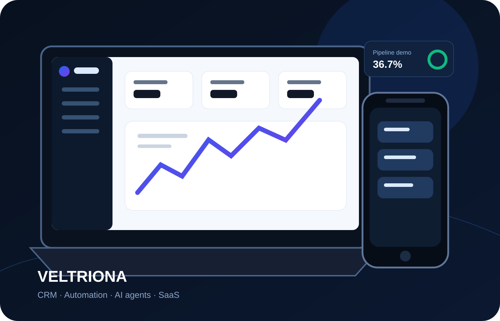
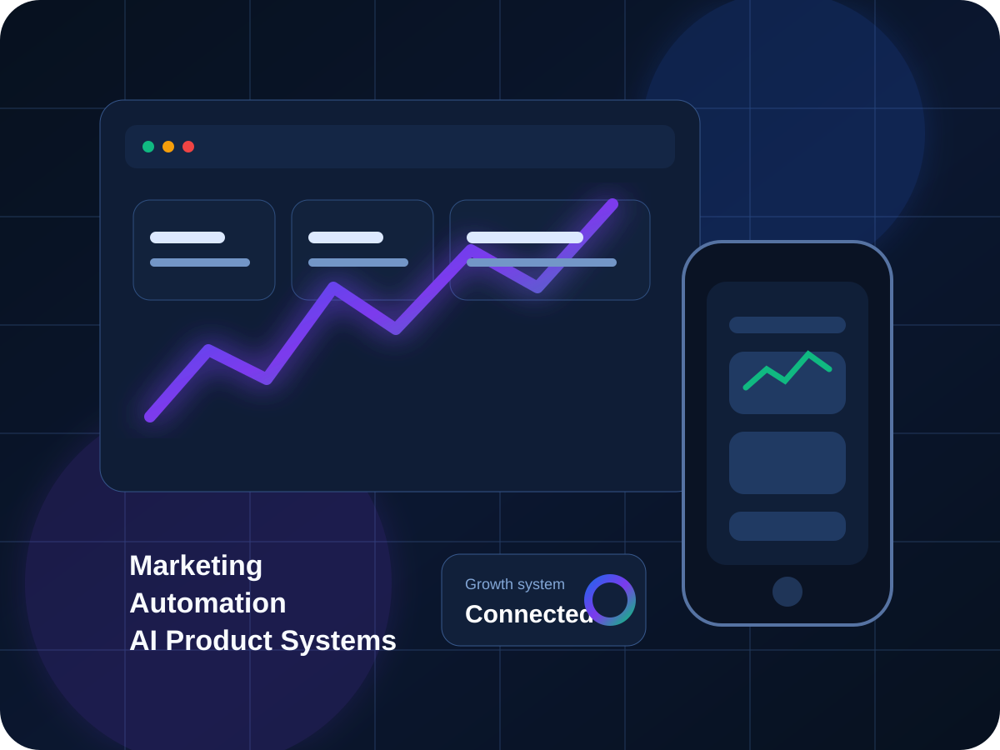
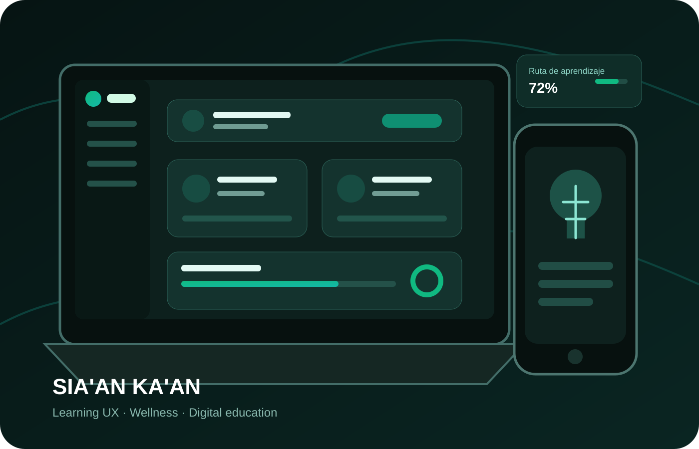

CRM SaaS · Proyecto destacado
Veltriona
Producto digital para negocios de servicios que integra clientes, pipeline, agenda, ingresos, automatización y agentes de IA.
Ver caso de estudio ↗Conecto estrategia, campañas, automatización, datos y desarrollo para crear experiencias digitales claras, medibles y preparadas para crecer.


Producto digital para negocios de servicios que integra clientes, pipeline, agenda, ingresos, automatización y agentes de IA.
Ver caso de estudio ↗
Ecosistema que conecta marketing, formación, experiencia del alumno, contenidos interactivos y tecnología para wellness.
Ver caso de estudio ↗Pregunta por experiencia, proyectos, herramientas, marketing, automatización o disponibilidad.
El asistente utiliza únicamente información pública y no consulta sistemas privados.
Prototipos para atención, productividad y experiencias dentro de productos digitales.
Flujos comerciales, CRM, Make, HubSpot, Zoho e integraciones orientadas a reducir tareas manuales.
KPIs, dashboards, GA4, GTM y visualización de datos para tomar mejores decisiones.
Secuencias, módulos progresivos, interacción y aprendizaje guiado para plataformas educativas.
Disponible para oportunidades profesionales y proyectos donde marketing, automatización, IA y producto necesiten trabajar juntos.